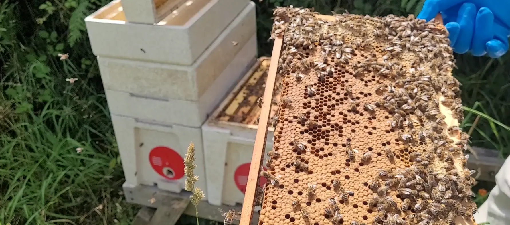

Last updated: 04 July 2026

One Apiary, Nine Colonies… and Nine Different Stories
Some inspections are over before you know it. Others leave you standing in the apiary thinking about what you've just seen. Today was definitely one of those days.
I headed over to my apiary this morning with the intention of carrying out a full inspection on all nine colonies. The weather was perfect – around 18°C and sunny – the bees were flying well and bringing pollen back into the hives, so I decided to crack on.
Whenever I inspect multiple colonies in the same apiary, I always find it fascinating how different they can be. They all experience the same weather, the same forage and the same surroundings, yet every hive seems to be writing its own story.
By the time I'd closed the final hive, I was reminded once again why I never get bored of beekeeping.
A Reassuring Start
One of the nicest things about today's inspections was that there weren't any nasty surprises in most of the colonies.
Frame after frame contained what I like to see – fresh eggs, healthy larvae, solid brood patterns and calm bees that were happy enough for me to work through them without much fuss.
I don't always see the queen herself, and today was no different, but finding fresh eggs is usually enough to put my mind at rest. It tells me she's been doing her job over the last few days, and that's often all the reassurance I need.
Another thing that stood out today was the complete absence of queen cells. Earlier in the season every inspection seemed to revolve around swarm prevention, but today's inspections felt completely different. Instead of wondering whether colonies wanted to swarm, I found myself thinking much more about honey production and preparing for the weeks ahead.
The Bees Have Been Busy
It didn't take long before I realised several colonies have been making the most of the recent nectar flow.
One colony already has a full honey super waiting to come off, while another has nearly one and a half supers full. A couple of the stronger colonies needed more room, so I added extra supers before closing them back up.
I don't know if other beekeepers are the same, but there's something incredibly satisfying about lifting a super and realising just how much heavier it's become since the last inspection.
Not every colony is at the same stage, though, and that's one of the things I enjoy observing. Some are charging ahead while others are taking things at their own pace. It's another reminder that you can't compare one hive with another too closely.
Today's Honey Notes
- Several supers filling nicely.
- One colony has around one and a half supers almost ready.
- Additional supers added where space was needed.
- Honey extraction is definitely getting closer.
One Hive Had Other Ideas…
Most of the colonies behaved exactly how I'd hoped.
Then I opened Hive #9.
Within seconds it was obvious this colony wasn't in the same mood as the others. The bees became defensive much more quickly and made it perfectly clear they weren't interested in entertaining visitors today.
It made me smile afterwards because every beekeeper seems to have that one colony that likes to remind you who's in charge. Whether it was the weather, genetics or simply a bad day, they certainly kept me on my toes.
Not Everything Went to Plan
As pleased as I was with most of the inspections, there were also a couple of colonies that left me with decisions to make.
One colony appears to have become queenless. I spent longer than usual going through it because I wanted to be certain I hadn't missed something obvious, but there were no fresh eggs and no sign of a laying queen.
Rather than letting the colony slowly decline, my current thinking is to merge one of my nucleus colonies with it using the newspaper method. It's never a decision I particularly enjoy making, but sometimes it's the right thing to do for the bees.
Another nucleus colony also left me scratching my head.
The population is quite low and stores are beginning to run short, but I'm still not convinced it's time to give up on it. There's every chance a virgin queen is out on a mating flight, so I'm going to give it another inspection before making any final decisions.
One thing beekeeping has taught me over the years is that rushing decisions rarely ends well.
Jobs for Next Week
I left the apiary with a clear plan in my head.
- Remove the full supers ready for extracting.
- Keep monitoring the queenless colony.
- Prepare everything for a newspaper merge if needed.
- Check back on the weaker nucleus colony.
- Make sure the stronger colonies don't run out of storage space.
As always, the bees have already decided what my next weekend looks like!
Final Thoughts
I drove home thinking about how different every colony had been today.
In the space of a few hours I'd inspected thriving colonies packed with brood, colonies filling supers with honey, one particularly grumpy hive, a queenless colony needing intervention and a tiny nucleus that still deserves a bit more patience.
That's what I love about beekeeping.
You can inspect nine colonies in exactly the same apiary and somehow come away feeling as though you've visited nine completely different worlds.
And that's exactly why I'm already looking forward to my next inspection.
Join the Conversation
Beekeeping is all about learning from one another. Follow BeezKnees for more inspection notes, seasonal observations and practical beekeeping tips.